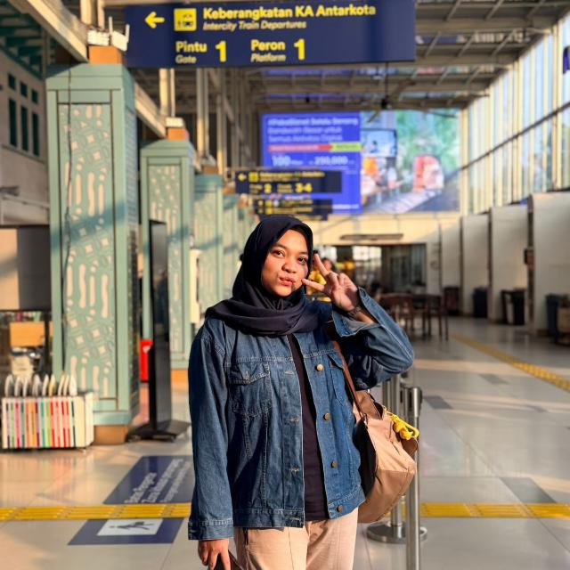

SELAMAT ULANG TAHUN
KAK KHOLFI
28 tahun
Satu usia lagi, satu cerita baru



Tambah satu usia lagi di tahun ini. Semoga kau sehat selalu, dan di tahun yang baru ini kamu bisa lebih bersenang-senang karena ini hari yang indah.
Terima kasih sudah melangkah sejauh ini. Masih banyak waktu untuk kejar angan-angan dan temukan bahagiamu.
Semoga panjang umur, dan kamu selalu bisa merayakan sepenuhnya dirimu.